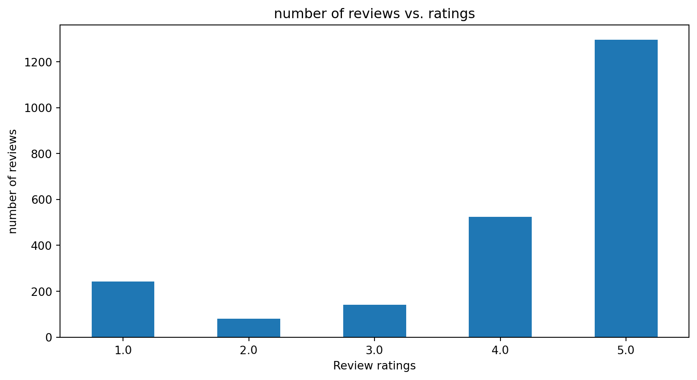
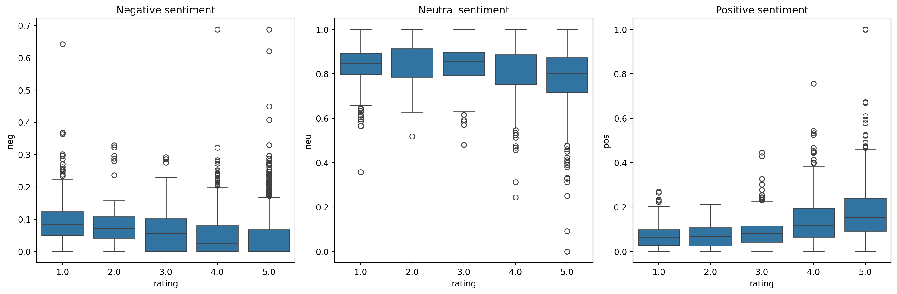
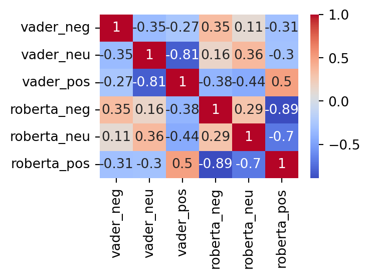

import pandas as pd
import numpy as np
import matplotlib.pyplot as plt
import seaborn as sns
import nltk
from nltk.sentiment import SentimentIntensityAnalyzer
from tqdm.notebook import tqdm
from scipy.special import softmax
from transformers import AutoTokenizer, AutoModelForSequenceClassification1. Introduction:
This blog will utilize both rule-based VADER sentiment analysis tool and machine learning pre-trained RoBERTa model to perform analysis of sentiment in Amazon reviews. It will apply sentiment analysis models to classify reviews into categories such as “positive”, “neutral”, and “negative”. The visualizations at end will also show the relationship between different sentiment classifiers.
2. Import the libraries:
3. Load the amazon_reviews csv file:
amazon_df = pd.read_csv("amazon_reviews.csv")4. Bar plot to show the number of reviews in different ratings:
vis = amazon_df['rating'].value_counts().sort_index().plot(kind='bar', title='number of reviews vs. ratings', figsize=(10,5))
vis.set_xlabel("Review ratings")
vis.set_ylabel("number of reviews")
vis.set_xticklabels(vis.get_xticklabels(), rotation=1)
plt.show()
5. Apply SentimentIntensityAnalyzer:
The code below uses the VADER sentiment analysis tool from NLTK to give scores for each Amazon reviews. Based on the scores, the new column sentiment will classify ‘negative’, ‘positive’, ‘neutral’ based on the scores. The dataframe vader_nltk stores polarity scores and sentiment labels.
def get_sentiment(score):
if score < -0.05:
return 'negative'
elif score > 0.05:
return 'positive'
else:
return 'neutral'
sia = SentimentIntensityAnalyzer()
res = {}
for i, row in tqdm(amazon_df.iterrows(), total=len(amazon_df)):
text = str(row['reviewText'])
myid = row['id']
polarity_scores = sia.polarity_scores(text)
res[myid] = {**polarity_scores, 'sentiment': get_sentiment(polarity_scores['compound'])}
vader_nltk = pd.DataFrame.from_dict(res, orient='index').reset_index()
vader_nltk.columns = ['id'] + list(vader_nltk.columns[1:])
vader_nltk = pd.merge(vader_nltk, amazon_df, on='id', how='left')
vader_nltk.head()| id | neg | neu | pos | compound | sentiment | reviewerName | rating | reviewText | reviewTime | day_diff | helpful_yes | helpful_no | total_vote | score_pos_neg_diff | score_average_rating | wilson_lower_bound | |
|---|---|---|---|---|---|---|---|---|---|---|---|---|---|---|---|---|---|
| 0 | 0 | 0.688 | 0.312 | 0.000 | -0.2960 | negative | NaN | 4.0 | No issues. | 2014-07-23 | 138 | 0 | 0 | 0 | 0 | 0.0 | 0.0 |
| 1 | 2 | 0.077 | 0.923 | 0.000 | -0.3089 | negative | 1K3 | 4.0 | it works as expected. I should have sprung for... | 2012-12-23 | 715 | 0 | 0 | 0 | 0 | 0.0 | 0.0 |
| 2 | 11 | 0.000 | 1.000 | 0.000 | 0.0000 | neutral | 98020 | 3.0 | It works, but file writes are a bit slower tha... | 2013-11-20 | 383 | 0 | 0 | 0 | 0 | 0.0 | 0.0 |
| 3 | 32 | 0.088 | 0.774 | 0.138 | 0.5255 | positive | Abdulrahman J. Alrashed "dr34m3r" | 1.0 | I bought 2 of those SanDisk 32 GB microSD , us... | 2013-03-08 | 640 | 0 | 0 | 0 | 0 | 0.0 | 0.0 |
| 4 | 33 | 0.000 | 0.632 | 0.368 | 0.9153 | positive | Abel Feliciano "Ace Master" | 4.0 | The memory card is an excellent condition and ... | 2012-11-09 | 759 | 0 | 0 | 0 | 0 | 0.0 | 0.0 |
6. the boxplot to show the distribution of ‘neg’, ‘neu’, ‘pos’ for each rating.
fig, axs = plt.subplots(1, 3, figsize=(15,5))
sns.boxplot(data=vader_nltk, x='rating', y='neg', ax=axs[0])
sns.boxplot(data=vader_nltk, x='rating', y='neu', ax=axs[1])
sns.boxplot(data=vader_nltk, x='rating', y='pos', ax=axs[2])
axs[0].set_title('Negative sentiment')
axs[1].set_title('Neutral sentiment')
axs[2].set_title('Positive sentiment')
plt.tight_layout()
plt.show()
7. Hugging Face Transformers to load a pre-trained model:
It sets up a sentiment analysis model based on RoBERTa architecture for analyzing the Amazon reviews.
MODEL = "cardiffnlp/twitter-roberta-base-sentiment"
tokenizer = AutoTokenizer.from_pretrained(MODEL)
model = AutoModelForSequenceClassification.from_pretrained(MODEL)8. VADER Sentiment analysis vs. RoBERTa Model Sentiment Analysis:
(1). VADER score about the review at index 30:
example_review = amazon_df['reviewText'][30]
example_review
print("Vader sentiment analysis scores for the review at index 30 is ", sia.polarity_scores(example_review))Vader sentiment analysis scores for the review at index 30 is {'neg': 0.0, 'neu': 0.886, 'pos': 0.114, 'compound': 0.6249}(2).RoBERTa score about the review at index 30:
encoded_review = tokenizer(example_review, return_tensors='pt')
output = model(**encoded_review)
scores = output[0][0].detach().numpy()
scores = softmax(scores)
scores_dict = {
'roberta_neg': scores[0],
'roberta_neu': scores[1],
'roberta_pos': scores[2]
}
print("Roberta scores for the review at index 30 is ", scores_dict)Roberta scores for the review at index 30 is {'roberta_neg': 0.25840575, 'roberta_neu': 0.34866926, 'roberta_pos': 0.39292496}9. RoBERTa score and VADER score Integration:
The res dictionary combines and contains both the VADER sentiment analysis result and the pre-trained model RoBERTa model’s result.
def roberta_scores(example_review):
encoded_review = tokenizer(example_review, return_tensors='pt')
output = model(**encoded_review)
scores = output[0][0].detach().numpy()
scores = softmax(scores)
scores_dict = {
'roberta_neg': scores[0],
'roberta_neu': scores[1],
'roberta_pos': scores[2]
}
return scores_dict
res = {}
for i, row in tqdm(amazon_df.iterrows(), total=len(amazon_df)):
try:
review = row['reviewText']
review_id = row['id']
if isinstance(review, str):
vader_result = sia.polarity_scores(review)
vader_result2 = {f"vader_{key}": value for key, value in vader_result.items()}
roberta_result = roberta_scores(review)
res[review_id] = {**vader_result2, **roberta_result}
else:
print(f'Skipped id: {review_id} due to non-string review')
except RuntimeError:
continue
dict_list = list(res.items())[:5]
for item in dict_list:
print(item)(0, {'vader_neg': 0.688, 'vader_neu': 0.312, 'vader_pos': 0.0, 'vader_compound': -0.296, 'roberta_neg': 0.07495943, 'roberta_neu': 0.5892151, 'roberta_pos': 0.33582547})
(2, {'vader_neg': 0.077, 'vader_neu': 0.923, 'vader_pos': 0.0, 'vader_compound': -0.3089, 'roberta_neg': 0.42375654, 'roberta_neu': 0.4483106, 'roberta_pos': 0.12793283})
(11, {'vader_neg': 0.0, 'vader_neu': 1.0, 'vader_pos': 0.0, 'vader_compound': 0.0, 'roberta_neg': 0.2745669, 'roberta_neu': 0.4989962, 'roberta_pos': 0.22643691})
(32, {'vader_neg': 0.088, 'vader_neu': 0.774, 'vader_pos': 0.138, 'vader_compound': 0.5255, 'roberta_neg': 0.54347664, 'roberta_neu': 0.3384522, 'roberta_pos': 0.118071124})
(33, {'vader_neg': 0.0, 'vader_neu': 0.632, 'vader_pos': 0.368, 'vader_compound': 0.9153, 'roberta_neg': 0.0029975341, 'roberta_neu': 0.026594352, 'roberta_pos': 0.97040814})10. Merge into dataframe:
model_df = pd.DataFrame(res).T
model_df = model_df.reset_index().rename(columns={'index':'id'})
model_df = model_df.merge(amazon_df, how='left')
model_df.head()| id | vader_neg | vader_neu | vader_pos | vader_compound | roberta_neg | roberta_neu | roberta_pos | reviewerName | rating | reviewText | reviewTime | day_diff | helpful_yes | helpful_no | total_vote | score_pos_neg_diff | score_average_rating | wilson_lower_bound | |
|---|---|---|---|---|---|---|---|---|---|---|---|---|---|---|---|---|---|---|---|
| 0 | 0 | 0.688 | 0.312 | 0.000 | -0.2960 | 0.074959 | 0.589215 | 0.335825 | NaN | 4.0 | No issues. | 2014-07-23 | 138 | 0 | 0 | 0 | 0 | 0.0 | 0.0 |
| 1 | 2 | 0.077 | 0.923 | 0.000 | -0.3089 | 0.423757 | 0.448311 | 0.127933 | 1K3 | 4.0 | it works as expected. I should have sprung for... | 2012-12-23 | 715 | 0 | 0 | 0 | 0 | 0.0 | 0.0 |
| 2 | 11 | 0.000 | 1.000 | 0.000 | 0.0000 | 0.274567 | 0.498996 | 0.226437 | 98020 | 3.0 | It works, but file writes are a bit slower tha... | 2013-11-20 | 383 | 0 | 0 | 0 | 0 | 0.0 | 0.0 |
| 3 | 32 | 0.088 | 0.774 | 0.138 | 0.5255 | 0.543477 | 0.338452 | 0.118071 | Abdulrahman J. Alrashed "dr34m3r" | 1.0 | I bought 2 of those SanDisk 32 GB microSD , us... | 2013-03-08 | 640 | 0 | 0 | 0 | 0 | 0.0 | 0.0 |
| 4 | 33 | 0.000 | 0.632 | 0.368 | 0.9153 | 0.002998 | 0.026594 | 0.970408 | Abel Feliciano "Ace Master" | 4.0 | The memory card is an excellent condition and ... | 2012-11-09 | 759 | 0 | 0 | 0 | 0 | 0.0 | 0.0 |
11. Heatmap to show the relationship between VADER Sentiment analysis tool and RoBERTa training model:
The heatmap is applied here to explore the correlation between the VADER model classifications and the RoBERTa model classifications.
plt.figure(figsize=(4, 3))
correlation = model_df[['vader_neg', 'vader_neu', 'vader_pos', 'roberta_neg', 'roberta_neu', 'roberta_pos']].corr()
sns.heatmap(correlation, annot=True, cmap='coolwarm')
plt.tight_layout()
plt.show()
From the heatmap shown above, the correlation coefficient of two models’ relationship:
- vader_neg - roberta_neg: 0.35
- vader_neu - roberta_neu: 0.36
- vader_pos - roberta_pos: 0.5